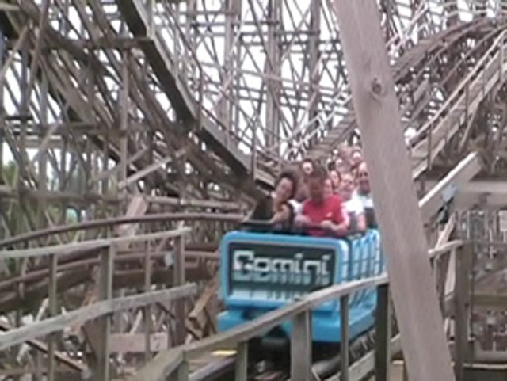
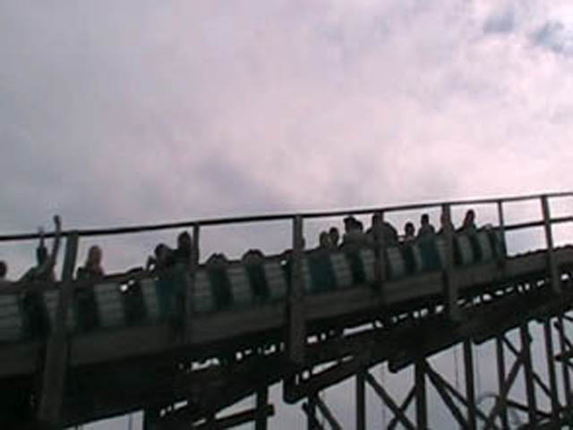
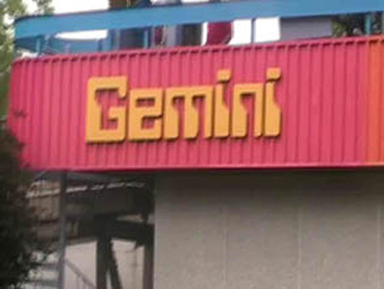

| |
Gemini Review
We're here at Cedar Point. After getting in the trains, we're off. First it's a turn out of the station followed by some straight track. During this part of the ride, you take a look at the people on the other side of you. After screaming random insults at each other such as "HEY DICKWEED!!!! I AM GOING TO KICK YOUR SCRAWNY LITTLE ASS!!!!!", you shake fists at each other, declare yourselves enemies, and turn into the lifthill. While climbing the lifthill, you can't help but angrily glare at the other side. You begin to hate everything about them. The way they dress, the way they talk, the way the ride on the wrong side of Gemini. But then you get distracted by the first drop. Luckily for us, there is a nice pop of airtime for everyone (Even the losers on the other side). Once we are done dropping, we rise back up into the turnaround. When in the turnaround, you then realize that you are either winning or losing. If you are winning, you start to cheer and start singing the winning song. If you are losing, you begin to cry. But the coaster race is not over yet. We head straight down the second drop. We then head straight into an airtime hill. While the airtime there isn't amazing or anything, it's still airtime. You then head up into another hill. If you are winning, you are watching your ass to make sure the other side DOES NOT PASS YOU!!!! If you are losing, you are charging as fast as you can so you can PASS THE OTHER SIDE!!! We then are in the second turnaround. If you were winning, you are horrified to find out that the other side is catching up to you. If you were losing, you are now thrilled to find out that you are catching up to the other side. By the end of the turnaround, we are about even with each other, with both sides determined to win the Coaster Race. We then are distracted by the drop and the pop of airtime that goes along with it. After charging through another airtime hill, we begin to notice the features we were noticing on the lifthill. Then we rise up into another turnaround. If you were originally winning, I've got good news. YOU'RE WINNING AGAIN!!! If you were originally losing, I've got bad news. YOU'RE LOSING AGAIN!!! And to make matters worse, there's not too much left in this coaster race. We then drop down into an airtime hill that has no airtime at all. Then there's a little straight track under the structure. If you are losing, you're trying to catch up, but it seems nearly impossible. Then you rise up a little only to drop. When on the drop, you hit a nasty set of trim brakes. We then turn away from the other side as we bank up into a helix. We then glide into the brake run. If you have won the coaster race, then it's time for you celebrate. You should treat yourself to a ride on Maverick as your reward. If you lost the coaster race, then shame on you. You should hang your head in shame and go ride...I dunno. Cedar Point doesn't really have a bad ride anymore, Uh...whatever you hate, ride that as a punishment. I'd definetly ride Gemini while at Cedar Point, because not only does it give you a chance to do some good old coaster racing, but it's a pretty good ride.
7/10
Location: Cedar Point
Opened: 1978
Built by: Arrow
Last Ridden: June 20, 2021
Gemini Photos





Home
|